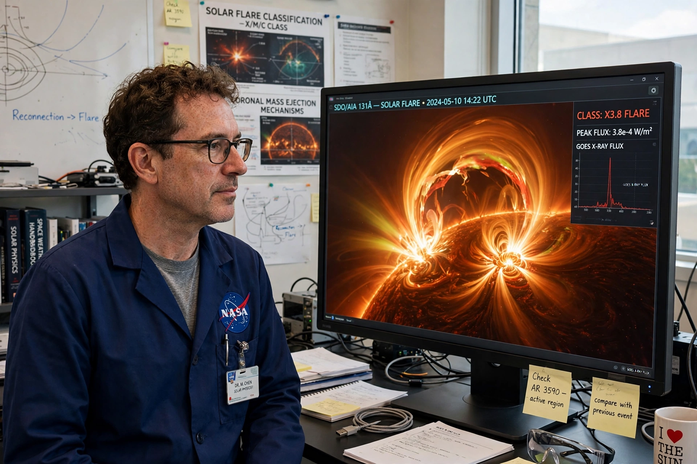

John C. Brown (astronomer)
John Campbell Brown (4 November 1947 – 16 November 2019) was a Scottish astronomer who served as the tenth Astronomer Royal for Scotland from 1995. He was Regius Professor of Astronomy at the University of Glasgow, where he led the astronomy and astrophysics group, and was renowned both for his research on solar flares and stellar activity and for his work as a populariser of astronomy, often combining it with magic tricks.

| John C. Brown | |
|---|---|
| Born | 4 November 1947, Dumbarton, Scotland |
| Died | 16 November 2019 (aged 72), Isle of Skye, Scotland |
| Fields | Solar physics, astrophysics |
| Title | Astronomer Royal for Scotland (1995–2019) |
Career
Brown studied at the University of Glasgow, where he spent essentially his whole career, becoming Regius Professor in 1996. His research concerned the physics of the Sun — particularly the hard X-ray signatures of energetic electrons in solar flares — and the activity of cool stars. He was a prominent figure in the UK solar physics community and in the planning of space missions studying the Sun.
Appointed Astronomer Royal for Scotland in 1995, he took the honorary role seriously as a public platform, giving energetic lectures across Scotland, writing the poem-studded book Cosmic Vision, and performing astronomy-themed magic. He was awarded the Gold Medal of the Royal Astronomical Society in 2012 and an OBE in 2016 for services to astronomy and science communication. He died suddenly in 2019 at his home on the Isle of Skye.